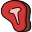
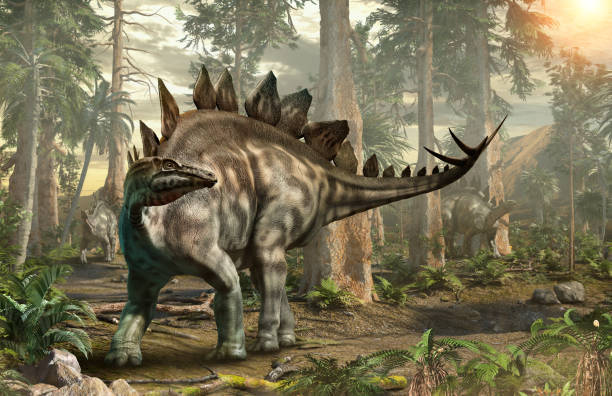
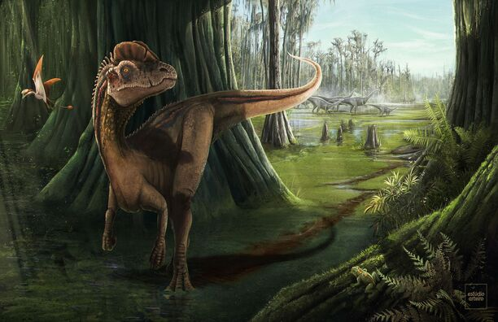
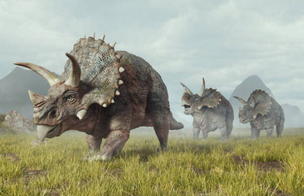
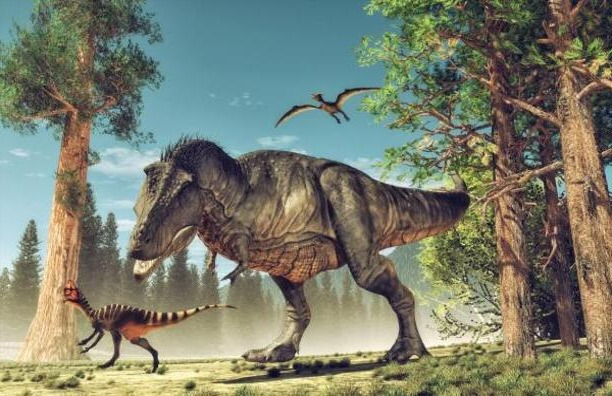
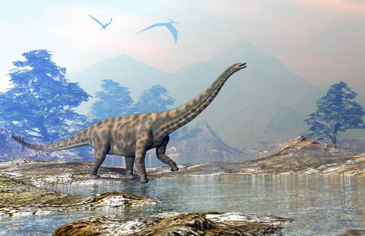
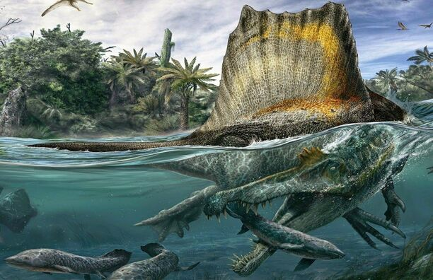

Dinosaurios Herbivoros
Dinosaurios Carnívoros
Stegosaurio
- Peso: 5 toneladas
- Alto: 3 mts.
- Largo: 6 - 7 mts.
- Región: Norte america y Europa
- Dieta: Plantas y frutas
Stegosaurus es un género de dinosaurios tireóforos estegosáuridos. Vivieron a finales del período Jurásico. Debido a sus distintivas espinas de la cola y placas, Stegosaurus es uno de los más reconocidos dinosaurios. Al menos tres especies han sido identificadas en la porción superior de la Formación Morrison, del oeste de Estados Unidos, y son conocidas por lo menos por 80 individuos.
Dilophosaurus
- Peso: 400 Kg
- Alto: 1.50 mts.
- Largo: 6 - 7 mts.
- Región: Norte america
- Dieta: Animales medianos y peces
Dilophosaurus fue uno de los primeros dinosaurios depredadores grandes, aunque más pequeño que algunos terópodos posteriores. Era delgado y de constitución ligera, y el cráneo era proporcionalmente grande, pero delicado. El hocico era estrecho y la mandíbula superior tenía una brecha de la ventana de la nariz. Tenía un par de crestas longitudinales en forma de placa en su cráneo, similar a un casuario con dos crestas. Los dientes eran largos, curvados, delgados y comprimidos hacia los lados.
Triceratops
- Peso: 5 - 9 toneladas
- Alto: 3 mts.
- Largo: 8 - 9 mts.
- Región: Norte america y Europa
- Dieta: Plantas pequeñas
Triceratops es un género de dinosaurios ceratopsianos ceratópsidos, que vivieron a finales del período Cretácico , hace aproximadamente 68 y 66 millones de años, en lo que hoy es Norteamérica. Es uno de los últimos géneros en aparecer antes del gran evento de extinción masiva del Cretácico-Terciario. Poseía una gran gola ósea (plataforma craneal posterior) y tres cuernos; cuerpo grande sobre cuatro fornidas patas, y con semejanzas en aspecto con el moderno rinoceronte, Triceratops es uno de los más reconocidos de todos los dinosaurios.
T - Rex
- Peso: 6 - 10 toneladas
- Alto: 6 mts.
- Largo: 12 mts.
- Región: Norte america
- Dieta: Todo tipo de animales
T. rex fue un carnívoro bípedo con un enorme cráneo equilibrado por una cola larga y pesada. En relación con sus largos y poderosos miembros traseros, los miembros superiores de Tyrannosaurus eran pequeños, pero sorprendentemente fuertes para su tamaño, y terminaban en dos dedos con garras. Durante mucho tiempo fue el mayor carnívoro de su ecosistema; debió de haber sido el superpredador, cazando hadrosáuridos y ceratópsidos.
Titanosaurio
- Peso: 13 toneladas
- Alto: 5 mts.
- Largo: 9 - 12 mts.
- Región: Suramérica, Europa y Madagascar.
- Dieta: Plantas y frutas
Titanosaurus fue un cuadrúpedo de cuello largo y dientes en forma de lápiz; poseía placas óseas en la piel. Estas placas óseas provocaron una confusión en la clasificación al ser encontrado en la India en el siglo xix. Primero se le colocó junto a los nodosáuridos por este sistema de defensa; luego con la aparición de otros saurópodos en Sudamérica se logró su correcta clasificación. Con hallazgos más recientes de otros géneros relacionados fue cuando los científicos se dieron cuenta de que los restos de una armadura ósea hallada en las proximidades pertenecía también a este dinosaurio.
Spinosaurus
- Peso: 6 toneladas
- Alto: 4 mts.
- Largo: 15 mts.
- Región: Egipto y Marruecos
- Dieta: Peces y reptiles
Spinosaurus pudo ser el más grande de todos los dinosaurios carnívoros, más grande aún que el Tiranosaurio rex y el Giganotosaurus, a pesar de no compartir la contextura robusta de estos anteriores. Se sabe que Spinosaurus comía pescado, y la mayoría de los científicos creen que cazaba presas tanto terrestres como acuáticas. La evidencia sugiere que era altamente semiacuático y vivía tanto en la tierra como en el agua al igual que los cocodrilos modernos.